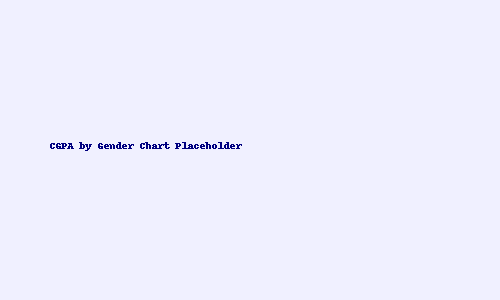

📊 Gender vs Academic Performance in Nigerian Universities
This project investigates the question: "Which gender performs better academically?"
📂 Dataset
Over 10,000 simulated student records from various Nigerian universities.
- Gender
- Institution, Level, Course
- CGPA, WAEC Grades, UTME Scores
📥 Download Dataset (CSV)
🔍 Tools Used
- Python (pandas, seaborn, matplotlib)
- Jupyter Notebook
📈 Key Insights
- Average CGPA by gender
- Visual comparison: histograms, boxplots
- Interpretation of results
📸 Sample Visualization

💬 Conclusion
The analysis provides insight into how male and female students perform academically based on multiple academic metrics.
← Back to Home